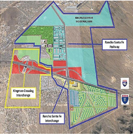
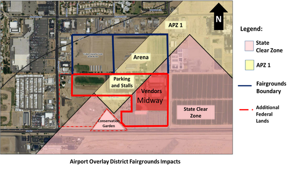

CEDS | Projects
Major projects, programs, and activities address the District's most significant needs that will best enhance the District's competitiveness, including sources of funding for past and potential future investments. These can be overarching themes for regional economic development success and is expected to include components. Funding sources should not be limited to EDA programs.
Community vital projects are appended to this page in order of submissions.
District community vital projects are further identified in the Community Improvement Plan (CIP) documents.
Project: Yuma Commerce Center (YCC) Sewer Line Installation/Connection
Priority 1: Enhance the City of Yuma and Yuma County region’s ability to compete for new private sector investment and new job creation by delivering shovel-ready manufacturing sites in the Yuma Commerce Center.
Timeline: Estimated start date of 5/2020 with completion expected by 9/2020.
Description: Construct 5,500 lineal feet of 12” sewer line in the City right of way with connection to the City’s sewer system. The connection would serve 11 industrially-zoned vacant parcels in YCC including a 14-acre parcel targeted for the construction of a 50,000-sf technology operations center.
Jobs Created or Retained: A minimum of 300 new jobs at full operations with the potential of up to 500 new jobs.
Budget: $1.0 – $1.1 million
Status: EDA-approved & funded - 09/2020
Contact: Jeff Burt, City of Yuma, (928) 373-5017
Project: Avenue 4E Sewer Line Installation/Connection
Priority 2: The 4E corridor provides a mid and long-term opportunity for the creation of industrial sites and the development of one or more industrial parks providing shovel-ready sites. Water service is already in-place on Avenue 4E however, there is no existing sewer line. More than 500 acres of vacant land is accessible by the proposed sewer line. Phase 1, the conversion of vacant land into industrial sites is projected to be 100 acres.
Timeline: Estimated start date of 10/2020 with completion expected by 05/2021.
Description: Construct 8,500 lineal feet of 18” sewer line in Avenue 4E extending north from 36th Street to North Frontage Road with connection to City’s existing sewer system.
Jobs Created or Retained: 300 to 400 (Phase 1)
Budget: $3.5 - $3.8 million
Status: EDA application pending.
Contact: Jeff Burt, City of Yuma, (928) 373-5017
Project: Yuma County Spaceport Land Feasibility Study
Priority 1: Prove Yuma County’s ability to house a small rocket commercial spaceport.
Timeline: Estimated start date of 8/2020 with completion expected by 10/2020.
Description: Hire ACTA, a third-party contractor, to implement and complete a thorough commercial spaceport land feasibility study.
Jobs Created or Retained: This project does not lead to direct job creation, but the findings will allow GYEDC to pursue a Federal Aviation Administration (FAA) Commercial Spaceport License and to the construction of a small rocket spaceport that will lead to job creation.
Budget: $34,520
Status: (underway) EDA-approved & funded - 02/2020
Contact: Julie Engel, Greater Yuma Economic Development Corporation President & CEO, (928) 782-7774
Project: GYEDC & City of San Luis, Mangrino Industrial Park, Unit #3 Road Extension
Priority 1: Magrino Industrial Park is a tool for enhancing employment opportunities within the region. The park has been developed in phases and after Phase 3, it will have 86.2893 remaining acres for future development. The most recent unit consists of 57.7465 acres currently zoned light industrial.
The Authority’s goal is to attract light and heavy industrial users to the area to promote job growth. Originally, the land use to the east side of Avenue D, the narrow portion of the property, was to accommodate a rail line but that would have to be located farther from future residential districts. An extension to Avenue D will provide a needed route for prospective properties to develop.
Timeline: 5 months
Description: Construct an extension of Avenue D including 12” waterline, 8” sewer line, and conduit lines.
Jobs Created or Retained: 76
Budget: $1.3 – $1.8 million
Status: pending EDA application
Contact: Buna George, Greater Yuma Port Authority, (928) 315-9070
Project: Kingman Industrial Park Roads
Priority 1: The two-lane road into the Airport and Industrial Park is necessary and will add vital importance to Kingman’s future and growth because the Airport and Industrial Park are such excellent economic drivers. It has been identified as a critical transportation infrastructure needed to boost the economic vitality of northwest Arizona. The interchange and connector roads will connect Kingman’s Municipal Airport and Industrial Park to I-40 and the future I-11 commerce corridor.
Timeline: 03/02/2020: Finalize Plans Groundbreaking: 07/1/2021
Description: 250-300 Direct jobs and 2,000 Construction Jobs over a 4 year Period.
Jobs Created or Retained:
Budget: $3.8 - $4 Million
Status: pending EDA application
Contact: Bennett Bradley, City of Kingman, (928( 565-1416
Project: Kingman Industrial Park Roads
Priority 2: Enhance the Kingman Industrial Park and its ability to compete for new private sector investment, create high paying quality jobs, foster development of a trained workforce, and expand the industrial base throughout the Industrial Park.
Timeline: estimated start date to be June 2020 with completion expected October 2021
Description: Construct two roads in Kingman Industrial Park. The roads are .35 Miles of Transport Drive (from Mohave Airport Drive to Finance Way( and .35 Miles of Government Way (Mohave Airport Drive to Finance Way).

Jobs Created or Retained: Upon completion of these roads it will provide approximately 14.5 new jobs and the Industrial Park, will also promote the retention of all exiting jobs and foster private capital investment opportunities for an established business.
Budget: $350-$650 thousand
Status: pending EDA application
Contact: Bennett Bradley, City of Kingman, (928) 565-1416
Legal property ownership of the existing Fairground location?
The existing Fairground location is approximately 120 acres (see map below). Part of the existing Fairground is owned by the Federal Government. In September, 1952, Department of the Interior - Bureau of Reclamation (BOR) dedicated to Yuma County 80-acres of land (APN 105-01-003) for the use and benefit of the public for a park, playground, and fairground at no cost to the County (solid red line). Per Cindy Flores (Manager, Water and Lands Contracts Group Bureau of Reclamation Yuma Area Office), this dedication constitutes a determinable real property interest for the Fair operation. The additional approximately 40 acres is owned by Yuma County Fair, Inc. (YCFI) (solid blue lines).

2) Will this happen again down the road with the new proposed location?
The Fairgrounds relocation is being broken into two phases. We are seeking funding for both phases but the primary concern at this time is Phase 1. Phase 1 is depicted in the map below.
Phase 1 consists of a relocation of the Fairground midway and associated buildings out of the Clear Zone for Runway 21L and as far out of Accident Potential Zone 1 for Runway 21R and 21L as feasible utilizing the existing property is part of the County dedication. Phase 1 is intended to be accomplished by March 2021 and will remain in place ideally no longer than 4-5 years during which time Phase 2 will be accomplished.
Phase 2 is the entire relocation of the Fairground to a property with sufficient room for future growth outside any areas of concern (Clear Zones/ Accident Potential Zones/ Noise Contours 70dB+(. All studies and reviews are being designed as a 50+ year plan for future growth/expansion of the Yuma Fair as both a County Fair, Rodeo, and multi-event center for the community. We are focusing on areas that have taken into consideration future community housing and commercial development, traffic and utilities, etc. This is not simply a relocation but a long term solution to protect MCAS Yuma.
Yuma County Fair Facts:
Consequences for the current/future workforce (the multiplier effect for Yuma County and MCAS Yuma) if the Fairgrounds must close beyond 2021.
Both Phase 1 and Phase 2 of the Fairground/Midway relocation projects have similar effects on the DoD/Marine Corps mission. Yuma County has three main economic drivers - Agriculture, Military, and Tourism. Agriculture is the only driver that may be least affected by any loss of Marine Corps Mission. Tourism would be affected.
There are an estimated 5,200 military retirees in the Yuma area and this figure does not include those who visit the Yuma area as winter visitors, many of whom are military retirees. The focus on economic/workforce impact is focused on the future growth of Marine Corps Air Station Yuma and the future growth and economic impact on the local community if military operations are reduced/affected by the current Fair operations.
The 2018 Economic Impact on the local community by MCAS Yuma is over $692M USD with our current contingent of Squadrons. The current plan is for 2 additional F35 squadrons at approximately 335 military personnel each. A 'rough' estimate of the economic impact of this increase in military population is $103M USD per year (extrapolating using current Economic impact and inflating by the 15% increase). This would not include the additional impact on local housing other commercial entities in Yuma that are directly affected by the increase in approximately 350 families with spouses and children.
If the Marine Corps would decide to close MCAS Yuma and locate our mission elsewhere due to the mission and operational concerns posed by activities located on the Fairgrounds at a minimum this would entail the loss of our complete direct economic impact ($692M USD). Based upon the 2017 Economic Impact of Arizona Military Operations performed by the Maguire Report, there are 989 indirect jobs and 776 secondary jobs with an indirect output of $103.6M USD and $164.5M USD in secondary economic impact all attributable to MCAS Yuma. Based upon these figures the rough economic impact of the Air Station annually would be a minimum of $960M USD to the local and state economies.
In addition to economic impact, MCAS Yuma has approximately 189,000 annual flight operations. A significant risk with the Fairgrounds continuing in its current location is a reduction of operations due to flight safety concerns. The amount is unknown at this time but Luke AFB who also has based F35 squadrons is limited in F-35 operations to approximately 75,000 annually due to incompatible development near its airfield. This would almost certainly have Department of Defense officials looking at alternate locations for the F-35 squadrons in order to meet operational requirements and thus the loss of some of the above mentioned economic drivers.
Status: underway
Contact: Paul Melcher, Yuma County, (928) 928-373-1093
Goals:
Objective: Expand local access to higher learning so Yuma County residents have the opportunity to achieve skills and support they need to find gainful employment across existing regional business clusters. Broaden access to higher education to increase per capita income. Increase Greater Yuma’s capacity to succeed in the worldwide economy by attracting new base employers seeking an adequate skilled workforce.
Background: Employment in the modern economy increasingly requires some form of post-secondary education – whether a certificate, associate degree, bachelor’s degree, or professional degree. Currently, many students and adults in Yuma County lack the skills and accreditations required by local employers. This limits their prospects of finding well-paying career opportunities that allow them to afford to live and to raise families locally.
Finding skilled talent is one of the greatest challenges facing employers in Yuma County. At the present time, only 14% of Yuma County residents have achieved a baccalaureate degree, half that of the State of Arizona. Moreover, statistics reveal many Yuma County residents start post-primary education without completing their degree or certification. Lack of access to advanced education in the Greater Yuma area has held back many of its citizens from achieving the education necessary to qualify for many of the skilled jobs available in the region.
Historically, a significant number of Yuma County students that start post-secondary education do not finish. One reason for this is theorized to be the lack of adequate certificate and baccalaureate education available in Yuma County, despite a young and rapidly growing population.
Yuma County has important primary employers including Yuma Proving Ground and the Marine Corps Air Station that offer high-tech jobs at wages that exceed the average for the area due to a lack of skilled prospective employees. These and other employers are often forced to hire from outside the Greater Yuma area; many of these employees stay a short time and then move on to jobs outside the area.
Talent developed locally is more likely to remain in the Greater Yuma area since their families are often already located here. This can enhance the sustainability of existing business clusters by reducing human capital procurement costs and enhance the socio-economic status of the Yuma MSA. A good supply of skilled human capital can help Greater Yuma attract new primary employers that are currently hesitant to locate here due to a lack of skilled labor.
Much work has been done in Yuma County to achieve successful secondary education graduation outcomes. In fact, at 87%, Yuma County currently exceeds the State of Arizona on that metric. The key is to build upon that successful foundation of high school graduates and provide the career training necessary to connect this cohort with the skilled jobs offered by regional employers.
Improving education outcomes for students and re-training adults will be critical to ensure that residents are able to find gainful employment and those employers are able to find workers in the future. If these needs are not addressed, many employers will face even greater challenges in maintaining operations. This threat impacts all organizations, including fundamental services like hospitals and schools in addition to manufacturers, agricultural operations, and professional businesses. Since several Greater Yuma employers are engaged in national defense and protection of sovereign borders, this is an even greater concern.
Arizona Western College (AWC) has developed a new program, the Yuma Promise that begins in the fall of 2020. The goal of Yuma Promise is to double the number of baccalaureate degrees in Yuma County by 2035. Achievement of this goal will dramatically benefit the local economy through advanced earning potential and a higher standard of living. Since AWC can provide Associates Degrees and not baccalaureate degrees, the capacity for local support to complete the goal is necessary. Arizona State University, Northern Arizona University, and the University of Arizona all have a local presence in Yuma County, but the need for more capacity may be necessary.
One challenge is that the AWC campus is located in a rural area that is not walkable or bikeable to an urban district.
Project: The Yuma Multiversity Campus is a project to develop a plan and potentially a place to fully unlock the benefits of universities and prospective local talent for local and regional economies, societies, culture, and quality of life.
The ultimate goal of the plan is to develop a pipeline of talent that is trained for the high-wage earning careers that are available through the diverse employers in the Greater Yuma region.
A vacant 200-acre Brownfield (US EPA) adjacent to the City of Yuma’s main downtown retail district and urban core offers the potential for the development of a walkable and bikeable educational district that can bring together advanced industry, institutions of higher learning, and prospective talent into an innovation district and training center.
A significant portion of this Brownfield is owned by Union Pacific Railroad. The land is no longer necessary for railroad operations.
Programming/amenities offered in the district could include:
To determine which, if any of these or other ideas best align with the needs of regional employers, the capacity of institutions of higher learning, and regional prospective talent, a third-party Strategic Assessment & Market Analysis should be deployed. This Assessment and Analysis would reveal the present and future need for additional access to advanced education via skilled training centers.
The Assessment and Analysis can also determine the potential need for research and development (R&D( amenities that would be focused on sustainable applied technologies in target economic clusters including agriculture, food manufacturing, and aerospace/aviation.
The scoping phase has been financed through grants from the Arizona Community Foundation and Arizona Public Service, as well as an in-kind contribution from the Gowan Company.
Future economic support for the project could come through the Economic Development Administration (EDA), regional private and public sector employers, regional lending community that could, in turn, receive CRA credit from the Federal Reserve Bank of San Francisco, Gates Foundation, and the USDA’s Food Research Initiative under Education & Workforce Development, as a collaborative effort under the Yuma Multiversity Campus project, for which potential partners could include the Arizona State University, Arizona Western College, Northern Arizona University, University of Arizona, and private sector employers including Gowan Company and major agriculturally-focused companies.
Objectives & Action Steps
Objective: YMVC Scoping (Phase 1)
Action: Hire ED, Execute Phase I
Timeframe: 2020
Objective: YMVC Planning (Phase 2)
Action: Deploy a Strategic Assessment and Market Analysis to identify gaps, resources, partners, and best practices. Prepare execution plan based on results of Assessment and Analysis.
Timeframe: 2021
Objective: YMVC Execution (Phase 3)
Action: Execute recommendations from Strategic Assessment and Market Analysis
Timeframe: 2022-2030
Project Participants, Benchmarks, Timeline
Goal:
Defined Project:
Project Team:
Benchmarks:
Start:
End:
Status:
Budget:
Status: (underway) EDA-approved & funded - 04/29/2021
Other Funding sources:
Scoping benchmarks:
Goal:
Defined Project:
Project Team:
Benchmarks:
Start:
End:
Budget:
Status:
Funding sources:
Scoping benchmarks:
Potential SA/MA Topics:
Goal:
Defined Project:
Project Team:
Benchmarks:
Start:
End:
Budget:
Status:
Funding sources:
Benchmarks: